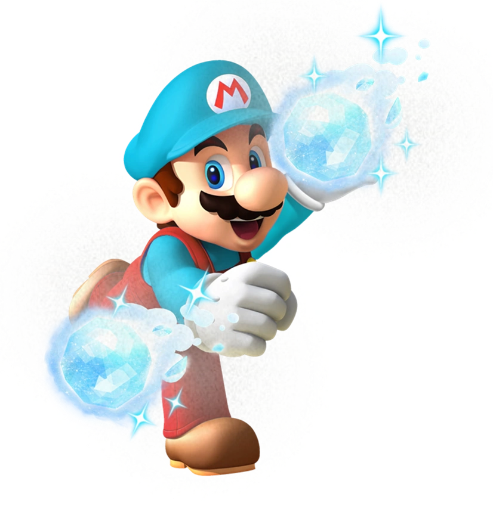
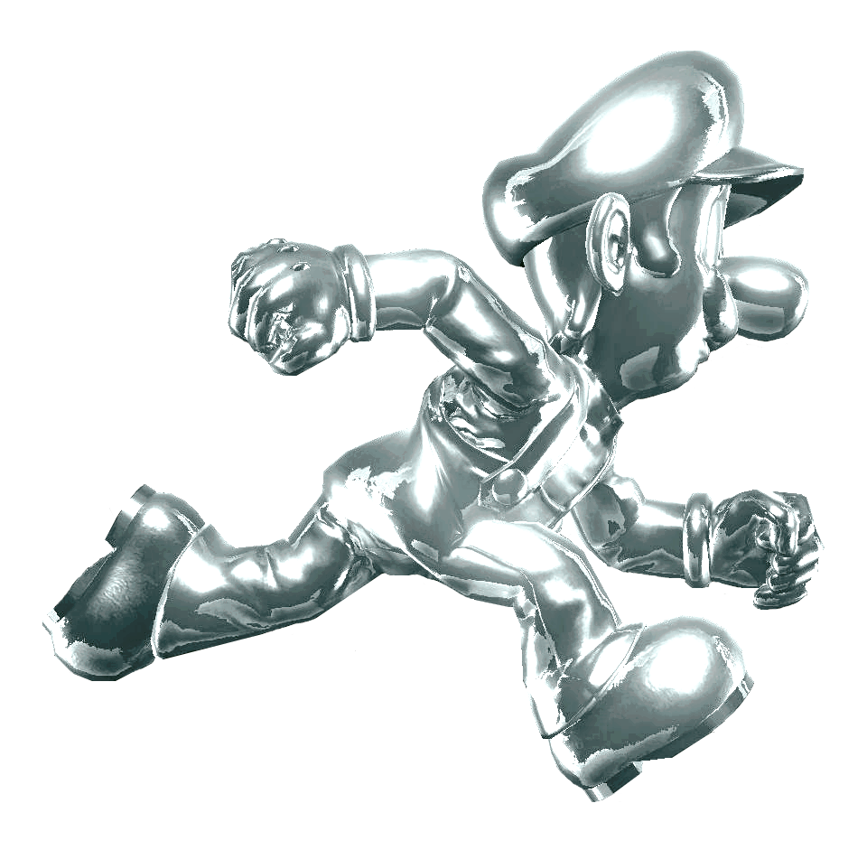

Power-ups are common in video games, giving players temporary boosts like extra strength, speed, or health. Across different games, they share similarities such as limited duration and rewarding skill or exploration. This page will take a closer look at how power-ups work and why they are such an important part of game design.

Mario with the Ice Flower power-up

Luigi with the Metal Cap power-up